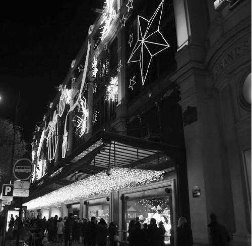

Tôi gọi Quận 9 là quận “nhà giàu” của Paris. Định nghĩa ấy chỉ là của riêng tôi thôi. Tôi gọi như vậy bởi đó là nơi tập trung những hệ thống cửa hàng đồ sộ chuyên bán “hàng hiệu”: Lafayette và Printemps (như kiểu Tràng Tiền Plaza ở Hà Nội), và đặc biệt, là nơi tập trung trụ sở đầu não của hàng loạt các ngân hàng lớn nhất nước Pháp, điểm làm việc mơ ước cho những sinh viên học chuyên ngành tài chính như tôi.
Trong rất nhiều những khu phố của một Paris rộng lớn, đa dạng thì ngoài đại lộ Champs Elyssées đã từng nhắc đến ở chương 1 và khu phố Latin mà tôi kể thêm ở chương trước thì có lẽ tôi yêu mến và có nhiều kỷ niệm nhất với khu đại lộ Haussmann, nơi có hai hệ thống cửa hàng Printemps và Lafayette.
Đọc đến đây, hẳn bạn còn nhớ câu chuyện tôi bị cướp ở ngay gần Lafayette? Trong rất nhiều năm, kể cả khi gần tốt nghiệp khóa cao học chuyên ngành tài chính hệ tiếng Pháp, đã lấy vợ và chuẩn bị đi tìm việc làm chính thức, mỗi tối, tôi vẫn đi làm thêm trong quán Nhật “rởm” ở ngay sau lưng Lafayette.
Nỗi khó khăn vất vả hằng ngày trong rất nhiều năm không làm cho tôi nhìn khu phố ấy kém đẹp hơn chút nào. Mỗi lần tôi đến, như lần đầu tiên, mắt tôi đều long lanh ánh sáng của những cửa hàng sầm uất và sang trọng, của những tòa nhà đặc trưng kiến trúc Haussmann nổi tiếng (chẳng phải ngẫu nhiên mà đại lộ ấy mang tên của nhà kiến trúc sư lừng danh đã quy hoạch và tạo nên diện mạo của Paris từ hai thế kỷ nay).

Quang cảnh nhộn nhịp đại lộ Haussmann. (Ảnh: Tác giả)
Và mùa Noel. Mùa Noel ở Paris chỗ nào cũng đẹp rực rỡ, nhưng đại lộ Elyssées và khu Lafayette là rực rỡ hơn cả. Ở Elyssées có chợ Noel, ở Lafayette có các gian trưng bày với cửa sổ lớn được biến thành rạp múa rối cho trẻ em ngày tết. Những khung cửa múa rối ấy, mỗi dịp Noel và Tết tây lại thu hút hàng trăm ngàn lượt người đến, hàng trăm ngàn những ánh mắt và nụ cười của trẻ em ít tuổi và trẻ em nhiều tuổi. Tôi gọi như thế vì người lớn đứng trước những khung cửa múa rối sinh động, lấp lánh ấy cũng tròn mồm tròn mắt ra thích thú như những đứa trẻ vậy.
Hồi ấy, sắp cuối năm, tôi hoàn thành khóa cao học tài chính của mình, là lúc bắt đầu “sự nghiệp” thực sự của tôi, liệu tôi có thể kết thúc cái “sự nghiệp” tạm thời là đi làm nhà hàng để bước vào môi trường làm việc mà tôi hằng mơ ước hay không? Đó là một câu hỏi lớn, vì khi ấy, tôi đã đọc và viết khá tốt bằng tiếng Pháp, nhưng khả năng nói thì rất tệ. Tính tôi vốn hơi nhút nhát trong giao tiếp. Và khổ nỗi tôi đi làm nhiều quá, toàn làm với người Việt nên trình độ nói tiếng Pháp không khá lên bao nhiêu. Bán hàng cũng chỉ quanh quẩn vốn từ liên quan đến mấy thứ đồ ăn.
Sinh viên ở Pháp thường bắt đầu sự nghiệp của mình bằng một khóa thực tập. Nó hoàn toàn không giống như những kỳ thực tập trong năm cuối đại học của tôi ở Việt Nam. Hồi đó ở Việt Nam, thực tập sinh chúng tôi đến các công ty chỉ để pha trà, lau bàn và đợi sai việc vặt như photo tài liệu hay đi căng lưới cho nhân viên văn phòng đánh cầu lông, rồi chờ người ta cho ít số liệu để đưa vào luận văn tốt nghiệp. Ở Pháp, thực tập là đi làm, có công việc, trách nhiệm rõ ràng như một nhân viên thực thụ của công ty. Nói chung là làm việc thật, chỉ có lương là thấp hơn. Nó tạo điều kiện cho công ty thử nghiệm một người trước khi tuyển dụng, vừa cho sinh viên cơ hội làm quen với môi trường chuyên nghiệp và cũng là để có cho mình một định hướng cho sự chọn lựa công việc, loại hình công ty sau này. Kỳ thực tập vì thế cực kỳ quan trọng trong sự khởi nghiệp của bất kỳ ai và các công ty tuyển thực tập sinh cũng khó khăn như tuyển nhân viên.
Tôi gửi hồ sơ đi khắp nơi. Miệt mài. Trong vòng ba tháng tôi gửi hàng trăm bộ hồ sơ. Đều là viết tay. Bạn đừng ngạc nhiên. Ở một xã hội phát triển tin học, người ta lại coi trọng thư tay. Chữ viết tay thể hiện tính cách, con người bạn, vừa thể hiện sự cẩn thận, tính kỷ luật và sự tôn trọng của bạn dành cho công ty. Và đơn xin việc viết tay không được phép tẩy xóa, nếu có lỗi là phải viết lại từ đầu. Vì thế nó còn thể hiện sự tập trung cao độ nữa.
Hồ sơ gửi đi, những lời từ chối quay lại. Mười cái: bình thường, ba mươi cái: hơi nản, nhưng đến cái thứ một trăm ba mươi bị từ chối thì chán nản vô cùng. Nhưng tôi biết mình cần phải làm gì. Lý lịch của tôi trình bày chưa đẹp, tôi tìm hiểu để làm lại, thư của tôi viết chưa hay, chưa “phong cách Pháp”, tôi mang đi hỏi các anh chị đi trước, tôi tìm hiểu trên internet để viết cho hay. Duy có đi phỏng vấn là khổ sở. Hồ sơ gửi mãi rồi cũng có người gọi mình đi phỏng vấn. Lần đầu tiên có người gọi, tôi cúp điện thoại xong đã đứng giữa nhà mà hét lên Yeeeeeees như thể mình đã được nhận vào làm. Không đâu. Phỏng vấn vòng đầu, chờ mãi, rồi phỏng vấn vòng hai, chờ nữa, rồi vòng ba, vòng bốn. Cuối cùng thì từ chối. Đấy là những lần còn vào được vòng sau, nhiều lần tôi bị loại ngay từ vòng lọc hồ sơ. Tôi nói tiếng Pháp kém quá. Nghe nói, ở một số nước châu Âu, nếu bạn nói tiếng Anh tốt thì không cần giỏi tiếng bản địa, bạn có thể tìm được công việc trong một công ty hệ Anh Mỹ. Ở Pháp thì không, hoặc ít nhất bạn phải từng có nhiều kinh nghiệm và nói tiếng Anh như tiếng mẹ đẻ, nếu không các công ty Anh Mỹ cũng phỏng vấn bạn bằng cả tiếng Pháp.
Tôi biết là mình nói kém. Khi còn học đại học ở Việt Nam, tôi học cả hai thứ tiếng nhưng chỉ chú trọng tiếng Anh, nghĩ mình không đi Pháp thì học tiếng Pháp làm gì. Sau đó sang Pháp du học, cũng lại sử dụng tiếng Anh, tiếng Pháp chỉ là tự học. Sẽ hoàn toàn là sai lầm khi nghĩ rằng, sống ở một nước nói tiếng khác tiếng mẹ đẻ của mình, lâu dần tự nó sẽ “ngấm” vào mình, tự nhiên mình nói được tiếng của người ta. HOÀN TOÀN SAI. Có rất nhiều người, thông minh nhanh nhẹn, sống ở Pháp cả đời nhưng cũng chỉ nói được một số câu tiếng Pháp, biết nhiều từ nhưng ghép vào nhau lổn nhổn như gạo trộn sỏi, có thể hiểu được ý chứ không thể nói thành câu. Có thể bạn nói thành thạo những câu giao tiếp quen thuộc, nhưng ngôn ngữ văn phòng lại đòi hỏi bạn phải nói khác.
Tôi cứ loay hoay như thế với điểm yếu tiếng Pháp của mình. Càng loay hoay, tôi càng mất tự tin. Tôi sợ nói tiếng Pháp đến mức tránh tối đa việc nói một câu mà không chuẩn bị, viết ra trên giấy trước. Nhiều khi đang đi trên đường, nhận cuộc gọi của một công ty gọi đi phỏng vấn, thường thì đơn giản thôi, nhưng tôi vẫn sợ. Dù đang ở chỗ thoáng đãng, bắt sóng điện thoại rất tốt, tôi cũng giả vờ nói ngắt quãng trong điện thoại kiểu như “Tôi đang… tàu... đi… ngầm… sóng… không tốt… gọi lại…” để trốn tránh việc trả lời, rồi chạy một mạch về nhà, viết lách chuẩn bị hoặc lấy đoạn viết đã soạn sẵn ra, hít một hơi thật sâu rồi mới gọi lại.
Tôi biết mình không có nhiều thời gian, mỗi khóa học họ chỉ cho một khoảng thời gian nhất định để tìm nơi thực tập, quá hạn mà không tìm được là ngừng, phải chờ đăng ký học ở một trường khác hoặc một khóa học khác [3]. Tôi bắt đầu “phương án” của mình, tôi ngồi viết ra tất cả những câu hỏi mà người ta có thể hỏi đến trong một buổi phỏng vấn, kể cả những câu ít phổ biến nhất, về đời tư, gia đình, về học hành, kinh nghiệm, về Việt Nam, về nước Pháp, về ước mơ, kế hoạch… Rồi tôi soạn “đáp án”. Tất cả hơn trăm trang giấy. Tôi viết rồi nhờ người giỏi tiếng Pháp xem qua giúp. Rồi học thuộc lòng. Rồi ngồi trước gương mà nói và tự sửa cho đến lúc trôi chảy nhất.
Hoàn thành xong “công trình” ấy, vừa may, có công ty gọi đi phỏng vấn, lại là một ngân hàng lớn hàng đầu nước Pháp và top 3 châu Âu. Tôi xem địa chỉ trụ sở công ty, bạn thử đoán xem nó ở đâu. Đúng vậy, khu đại lộ Haussemann, ngay gần khu Lafayette quen thuộc của tôi.
Đứng trước trụ sở công ty, một tòa nhà lớn, bên ngoài cổ kính và đẹp tráng lệ, bên trong là sự pha trộn hài hòa giữa kiến trúc cổ và nội thất, ánh sáng hiện đại, tôi hít một hơi thật sâu rồi bước vào, quyết tâm như chưa bao giờ thất bại, tự tin như thể đến đây chỉ để ký hợp đồng làm việc, tôi chưa bao giờ tự tin đi phỏng vấn như thế, nhờ vào sự chuẩn bị và lòng quyết tâm của tôi.
Như một sự hiển nhiên, tôi được nhận. YEEEEEEES tôi được làm thực tập cho một ngân hàng mà tôi hằng mơ ước, với mức lương rất cao so với lương thực tập bình thường. Nhưng tôi biết mọi sự mới chỉ là khởi đầu.
Ngay ngày đầu tiên đi làm, tôi nhận thấy ngay sự ngạc nhiên trong mắt chị trưởng phòng, người trực tiếp phỏng vấn tôi. Chị thấy rõ sự chênh lệch về khả năng nói tiếng Pháp đời thường của tôi với bài truyết trình hoàn hảo lúc phỏng vấn. Và tôi xin gặp chị, tôi nói thật về sự yếu kém tiếng Pháp của mình, về cách mà tôi chuẩn bị cho phỏng vấn. Tôi nói: “Tôi nghĩ đó không phải là dối trá. Đó là giải pháp duy nhất của tôi giành lấy một cơ hội. Muốn chứng minh khả năng của mình thì trước tiên tôi phải có cơ hội đó. Bây giờ là lúc tôi chứng minh những thứ khác. Hãy giao việc cho tôi và chị sẽ không phải thất vọng.” Chị nhìn vào mắt tôi và cười, gật đầu. Chị nói: “Đừng lo, tôi hiểu. Một người có thể học thuộc một trăm trang giấy để chuẩn bị cho một cuộc phỏng vấn thì có thể làm rất nhiều điều khác. Quan trọng là lòng quyết tâm, nếu đã quyết tâm như cậu, không có gì mà không làm được.”
Tôi nhìn thấy sự tin tưởng trong mắt chị, tôi nhìn thấy niềm tin trong mắt các đồng nghiệp, và tôi làm việc hết mình để không phụ những niềm tin ấy.
Hồi ấy, đi làm, tôi ăn mặc đẹp, sang trọng. Tôi khác hẳn với anh chàng lam lũ trong nhiều năm làm việc ở tiệm ăn giả Nhật chỉ cách đấy chừng 300 mét. Tôi vẫn trở lại đó thường xuyên, ăn uống chuyện trò với các “đồng nghiệp” cũ trong tiệm. Thật ra có lúc, tôi muốn chạy đến cười vào mặt lão chủ như một sự trả thù cho những năm tháng lão khinh bỉ và đày đọa tôi. Nhưng tôi không làm thế. Đến tiệm tôi vẫn cúi đầu chào lão và các anh đồng nghiệp cũ, vẫn nhẹ nhàng vui vẻ hỏi thăm từng người một và sẵn sàng xắn tay áo lên giúp ai đó nếu họ cần tôi. Sâu thẳm lòng mình, tôi biết ơn lão chủ và mọi người ở đó, chính nhờ công việc tại đây mà tôi có tiền đi học, lo cho gia đình. Tôi chưa là gì cả, còn rất lâu nữa tôi mới có thể là “cái gì đó”. Cuộc đời có những thăng trầm không ai biết được. Và tôi không nhìn người qua bộ quần áo. Bên trong bộ quần áo hào nhoáng thì tôi vẫn là tôi, một gã sinh viên vất vả tha nhặt, đục đẽo từng viên gạch nhỏ để xây con đường tìm đến tương lai.
Thoáng một cái thì hết sáu tháng thực tập. Đích thân ông Giám đốc Tài chính của công ty đến gặp tôi. Ông nói: “Chúng tôi đánh giá rất cao khả năng và phong cách làm việc của cậu. Tôi muốn nhận cậu vào làm chính thức. Nhưng cậu biết đó, thủ tục để tuyển một vị trí mới trong một công ty có cơ cấu lớn là khá phức tạp. Tôi phải có thời gian. Nếu cậu có thể kéo dài kỳ thực tập thêm vài tháng, tôi sẽ bắt đầu thủ tục xin mở một vị trí mới từ hôm nay.”
Tôi đang nằm mơ? Không phải. Mọi thứ đều rất thật. Nhìn vào mắt ông tôi biết và thật ra tôi cũng đã hình dung ra điều đó sau những kết quả công việc được đánh giá cao của tôi, cũng như mối quan hệ tốt với các đồng nghiệp. Tất nhiên là tôi đồng ý ở lại. Có lẽ chẳng có nơi nào tốt hơn nơi này để khởi đầu sự nghiệp của tôi.
Nhưng cuộc đời thì không đơn giản thế, ít nhất là cuộc đời của tôi. Trong bất kỳ chuyện gì tôi cũng cảm thấy mọi khó khăn cứ tìm đến tôi mà vui đùa cười cợt, như thể chúng yêu tôi lắm. Không việc gì tôi có thể làm dễ dàng ngay từ đầu. Tưởng chừng cuộc sống như muốn nói với tôi rằng: “Cái thằng này, nó không ngại khó, nó tự tin, thì cho nó thêm ít khó khăn nữa, xem nó còn tự tin được không.”
Hơn hai tháng trôi qua, ông Giám đốc Tài chính nói với tôi rằng yêu cầu của ông bước đầu được chấp thuận, ông còn cần phải tổ chức một buổi họp để chứng minh và bảo vệ nhu cầu tuyển nhân lực mới của mình nữa là sẽ được duyệt chính thức. Rồi bỗng nhiên ông nhận tin vui: ông được chính thức bổ nhiệm làm Tổng giám đốc hệ thống các ngân hàng của công ty tôi trên toàn lãnh thổ Luxembourg, một vị trí mà ông đã nhắm đến từ rất lâu. Ngày chia tay đi nhận công việc mới, ông nắm chặt tay tôi và nhìn vào mắt tôi: “Xin lỗi cậu, tôi chưa làm xong việc tôi hứa với cậu. Tôi đã truyền đạt lại với người mới đến thay. Tôi sẽ làm hết mình, nhưng bây giờ kết quả cuối cùng còn phụ thuộc chủ yếu vào người đó. Dù có thế nào, tôi tin rằng, người như cậu sẽ luôn vững vàng vươn lên.”
Người mới đến, một phụ nữ còn trẻ, thay thế vị trí Giám đốc Tài chính có lẽ là một thử thách hơi quá sức của chị vì trước đó chị còn làm ở một vị trí thấp hơn nhiều và ở tỉnh ngoài Paris, với chị mọi thứ vẫn còn bỡ ngỡ. Tôi vì thế mà gần như đoán được những gì chị sẽ nói khi một ngày chị gọi tôi vào phòng riêng. Chị bảo chị vừa đến nhận chức, còn cần rất nhiều thời gian để làm quen với mọi người, với công việc mới. Ông giám đốc cũ có nói với chị về việc của tôi nhưng ngay lập tức, chị chưa có cơ sở hiểu biết và chưa có uy lực, kinh nghiệm để có thể bảo vệ trước ban Tổng giám đốc và công ty mẹ về việc phải tuyển dụng một người mới như tôi. Chị nói xin lỗi là sẽ không thể tuyển tôi vào làm ngay được.
Tôi thất vọng nhưng không tuyệt vọng. Cuộc sống là như thế, luôn là như thế. Cũng giống như câu chuyện “Tái ông thất mã”, mọi thứ đều có hai mặt của nó. Cái rủi và cái may luôn song hành với nhau, cái rủi này có thể là một cái may khác và cái may này cũng có thể là một cái rủi khác. Cũng như trường hợp của tôi lúc này vậy, có thể việc không được tuyển vào làm là một cái rủi nhưng biết đâu nó sẽ khiến cho tôi gặp cái may khác, một cơ hội khác tốt hơn. Có bao giờ bạn nghĩ rằng cuộc đời của bạn đôi khi được định đoạt hoặc bị ảnh hưởng, thay đổi bởi những người xa lạ, hoàn toàn không quen biết? Có thể điều đó không xảy ra với tất cả mọi người, hoặc mọi người không để ý đến nhưng tôi thì thấy như vậy.
Tất nhiên định nghĩa “người xa lạ” cũng có thể được hiểu theo nhiều cách khác nhau, bởi vì thầy cô, bạn bè, đồng nghiệp, ngay cả vợ chồng của ta cũng bắt đầu đến với ta là những người xa lạ. Nhưng tôi muốn nói đến việc cuộc sống của ta đôi khi bị ảnh hưởng bởi những người xa lạ mà ta hoàn toàn không biết đến sự tồn tại của họ hoặc chỉ gặp thoáng qua hoặc chỉ biết sơ sơ.
Tôi còn nhớ mãi cậu bé ăn xin tôi đã gặp lúc bảy tuổi, lúc tôi đang rất đau khổ trong câu chuyện tôi kể ở chương 12 về chủ đề “ăn uống”. Cậu không nói với tôi lời nào, thậm chí không nhìn tôi, vì đang ngủ gật, thế mà cậu giúp tôi thoát ra khỏi nỗi đau khổ đó. Cậu ấy dạy cho tôi một bài học về sự khốn khó của loài người để tôi biết và trân trọng những gì tôi có. Hay tôi nhớ có một lần hồi học lớp tám, tôi đạt giải nhì cuộc thi học sinh giỏi tiếng Anh toàn quận. Được các cô giáo tung hô thành tích vì hồi đó tôi thuộc trường không chuyên mà giành giải trong cuộc thi với các trường chuyên, tôi tự hào lắm. Sau này tôi tình cờ biết được sáng hôm ấy có hai bạn rất giỏi tiếng Anh của một trường chuyên đèo nhau đi thi nhưng bị ngã xe đạp nên không tới dự được. Có lẽ vì thế mà tôi giành giải nhì, chứ nếu không có khi chỉ được giải khuyến khích. Tôi nhớ đến gã da đen định cướp tiền tôi ở cabin điện thoại ngày nào, nhưng hóa ra gã ấy lại dạy cho tôi một bài học về lòng tốt, sự thương hại. Tôi nhớ những câu chuyện nhỏ của bà hàng nước, ông xích lô đã kể, đã tâm sự với tôi, đã dạy dỗ tôi. Những cuốn sách, bản nhạc, bộ phim mà có khi tôi không nhớ tên người viết... Hết thảy đã cho tôi những suy nghĩ lớn lao về cuộc sống và hình thành nên tích cách con người tôi. Còn rất nhiều những ví dụ nữa, nhưng tôi chỉ muốn nói với bạn đừng vô tâm với những người xa lạ, với những thứ xung quanh tưởng như không liên quan đến mình.
Cũng bởi thế mà tôi luôn mở lòng ra với mọi người, luôn vui cười chào hỏi giúp đỡ bất kỳ ai tôi có thể. Bởi những người ấy, vô tình hay hữu ý, trực tiếp hay gián tiếp, có thể chỉ là một phần nhỏ thôi nhưng ngày nào đó sắp tới hoặc có thể đã xảy ra rồi, đã liên quan ảnh hưởng đến cuộc đời tôi, hoặc đến người thân quen của tôi. Hoặc liên quan đến ai đó, ngày nào đó sẽ là bạn của tôi. Nếu không có gì liên quan đến tôi, thì có sao chứ, tôi vui lòng được làm điều đó như lời cảm ơn đến cuộc sống này. Tôi trở lại với kỳ thực tập của tôi. Tôi kết thúc nó, và mọi thứ tôi phải bắt đầu lại từ đầu. Tôi lại phải đăng ký một khóa học mới, lại chờ đợi xin đi thực tập, tìm việc. Nhưng tôi cũng đã học thêm được rất nhiều, trưởng thành hơn, có kinh nghiệm trong môi trường chuyên nghiệp, tiếng Pháp tôi cũng khá hơn, tự tin hơn nhiều khi giao tiếp với người Pháp.
Trong lúc chờ đợi đó tôi lại trở về làm việc tại tiệm Nhật “rởm” mà không hề cảm thấy đau khổ phải quay lại với công việc vất vả, lam lũ sau hơn một năm “ăn trắng mặc trơn”. Bởi tôi biết, tôi tin đó chỉ là bước đệm cần thiết trong cuộc hành trình của mình. Những người ở quán đón sự quay lại của tôi với sự ngạc nhiên và tôn trọng. Họ không còn nhìn tôi như một gã sinh viên lăn lộn chịu khó nữa mà như một người đàn ông biết trân trọng những khốn khó đã dạy mình khôn lớn và dám đối mặt với những thăng trầm của cuộc sống, vượt qua cái tự ti và chiến thắng cái tự kiêu.
Hơn sáu tháng sau tôi được nhận vào thực tập trong một công ty khác, nhỏ hơn, ít nổi tiếng hơn và một năm sau trở thành nhân viên chính thức. Đã có rất nhiều chuyện, rất nhiều những thăng trầm khác mà tôi không thể kể hết, cho đến lúc tôi thực sự có thể bắt đầu công việc chuyên môn của mình với hợp đồng làm việc vô thời hạn. Nhưng cũng giống như ngày đầu tiên đến làm ở tiệm Nhật, như ngày đầu tiên đến phỏng vấn ở ngân hàng, mỗi lần đến với khu phố Haussmann và khu cửa hàng Lafayette, Printemps tôi lại nhớ đến những kỷ niệm cũ, lại tự nhắc nhở mình rằng: Tất cả mới chỉ, vẫn còn là sự bắt đầu. Mỗi ngày mới là sự bắt đầu của những cố gắng, những quyết tâm mới và là bắt đầu của một ngày để chia sẻ yêu thương.
Nếu có ai đó hỏi tôi có thể chia sẻ điều gì từ kinh nghiệm xin đi thực tập của tôi, tôi sẽ đúc kết vài điều ngắn gọn thế này:
- Nếu bạn có ý định tìm việc làm công sở ở các nước phát triển thì kỳ thực tập là một yếu tố tiên quyết, mang tính quyết định. Tôi gần như chưa bao giờ thấy ai (kể cả người bản xứ) có thể tìm được việc làm mà không từng đi thực tập.
- Tìm nơi thực tập thì khó khăn, đôi khi mất rất nhiều thời gian nhưng không được nản lòng. Đừng coi đó là một sự đối phó chỉ để có tấm bằng (có nhiều bạn vì ngại xin thực tập ở Pháp mà quay về Việt Nam mấy tháng để nhờ người quen xin vào thực tập trong một công ty ở nhà). Hãy nhớ rằng nếu muốn đi làm ở nước ngoài thì tấm bằng luôn có giá trị khi có kỳ thực tập ở nước đó. Ngay cả khi bạn quay về lập nghiệp ở quê hương, tôi chắc chắn việc bạn đã trải qua một kỳ thực tập hay đi làm trong một công ty nơi bạn du học sẽ luôn là một điểm cộng lớn trong hồ sơ cũng như trong sự nghiệp của bạn).
- Để có thể xin được thực tập, hay sau này là xin việc thì hai thứ quan trọng nhất là chuẩn bị hồ sơ và đi phỏng vấn. Hồ sơ nếu muốn được chú ý thì ngoài CV (tóm tắt lý lịch, quá trình học tập, kinh nghiệm của bản thân), nhất thiết phải có thư xin việc, trình bày động lực, mục đích của mình và lý do tại sao mình xin vào công ty đó chứ không phải bất kỳ công ty nào khác. Đơn xin việc vì thế nên viết tay và phải được thay đổi theo đặc điểm của từng công ty, chứ không dùng một cái đơn cho tất cả. Dù bạn có viết đến cái đơn thứ 100, hãy cố coi nó như là cái đầu tiên. Hãy tìm hiểu các thông tin về công ty đó, hình dung ra những gì bạn có thể làm trong công ty, và viết như thể viết thư tỏ tình (với những tình cảm thực của bạn), hãy khéo léo cài vào trong nội dung thư những “từ khóa”, những từ này có thể được tìm thấy từ chính quảng cáo của công ty cho vị trí đó, bởi đó là những phẩm chất hay kỹ năng mà người tuyển dụng muốn thấy trong hồ sơ của bạn. Hãy coi chừng: Sự chán nản và thiếu niềm tin hay tính cẩu thả của bạn thể hiện rất rõ qua cách bạn viết thư. Và người tuyển dụng không bao giờ dành quá năm giây để đọc những điều như thế, vậy là bạn trượt ngay từ vòng lọc hồ sơ rồi đấy! Bởi thế, nếu đọc một thông báo mà bạn không có chút cảm hứng nào với công ty và/hay công việc được đề ra, đừng mất thời gian để trả lời nó theo kiểu “vơ bèo gạt tép”. Bởi điều đó chỉ làm bạn mất thêm thời gian và nản lòng. Sự không thích thú của bạn, nếu không lộ ra trong hồ sơ cũng sẽ lộ ra khi đi phỏng vấn.
- Và cuối cùng, tất nhiên là phỏng vấn. Phỏng vấn thì ở đâu cũng thế, đã có quá nhiều tài liệu dạy bạn cách chuẩn bị, đối phó với nó. Riêng tôi, với tư cách là người từng đi phỏng vấn xin thực tập rất nhiều và sau này cũng phỏng vấn các thí sinh thực tập, xin việc mỗi năm vài lần, chỉ muốn nhấn mạnh điều này: Khi đi phỏng vấn, điều quan trọng nhất mà người ta tìm kiếm ở bạn là sự quyết tâm, là động lực, là tinh thần ham học hỏi và sẵn sàng làm việc để được học hỏi (tất nhiên những kiến thức cơ bản phải đạt yêu cầu). Đừng mất thì giờ tô vẽ nhiều cho bằng cấp của bạn (cái đó đã có in trong hồ sơ), cũng đừng nâng tầm quan trọng cho kiến thức hay những việc mình đã làm (bởi thường thì người đối diện với bạn tự biết rất rõ những điều đó). Hãy khiêm tốn, ngắn gọn và tập trung vào hai thứ chủ yếu: Quyết tâm của bạn và những vấn đề liên quan đến các “từ khóa”. Nếu có thể, hãy nói thêm một chút về con người và tính cách của bạn (một cách có chọn lọc), điều đó có thể làm giảm căng thẳng của cuộc phỏng vấn và khiến người ta chú ý đến bạn hơn những người khác. Hãy nhìn thẳng vào mắt nhà tuyển dụng với một cái nhìn đầy quyết tâm và chân thành. Thế thôi. Còn lại là chỗ của niềm tin và một chút may mắn.